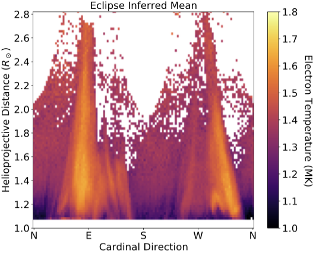
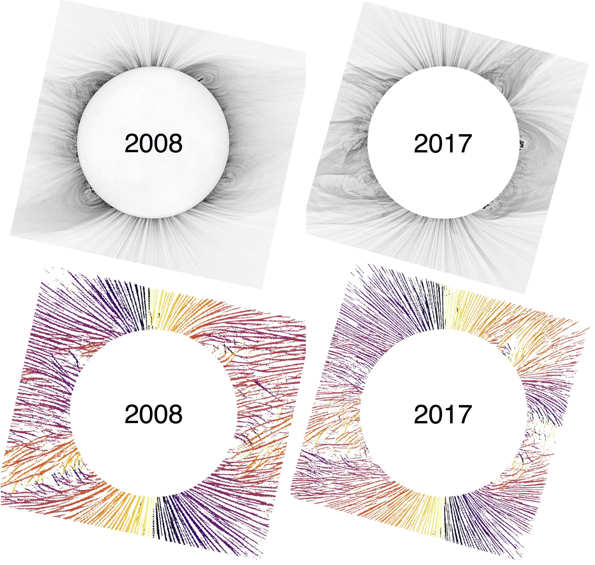
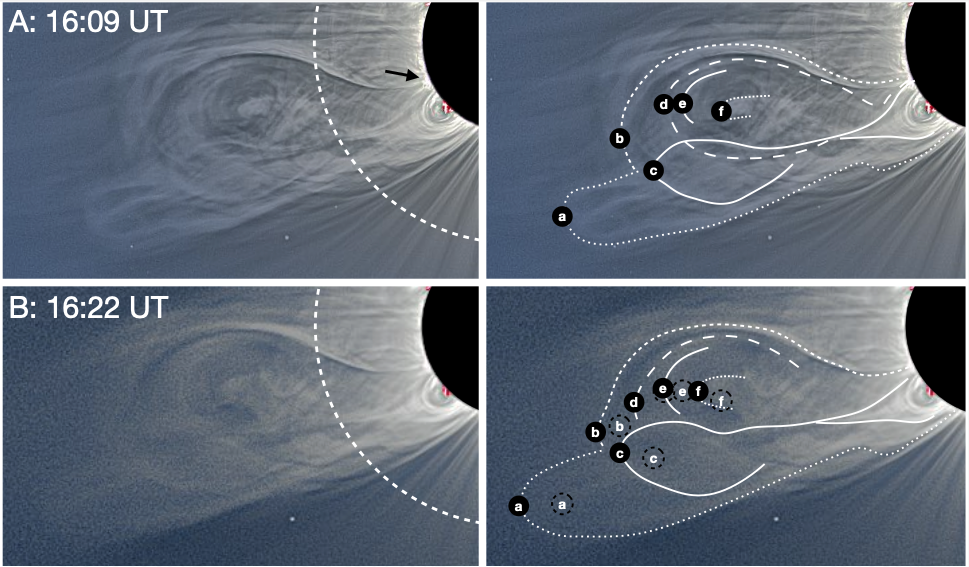
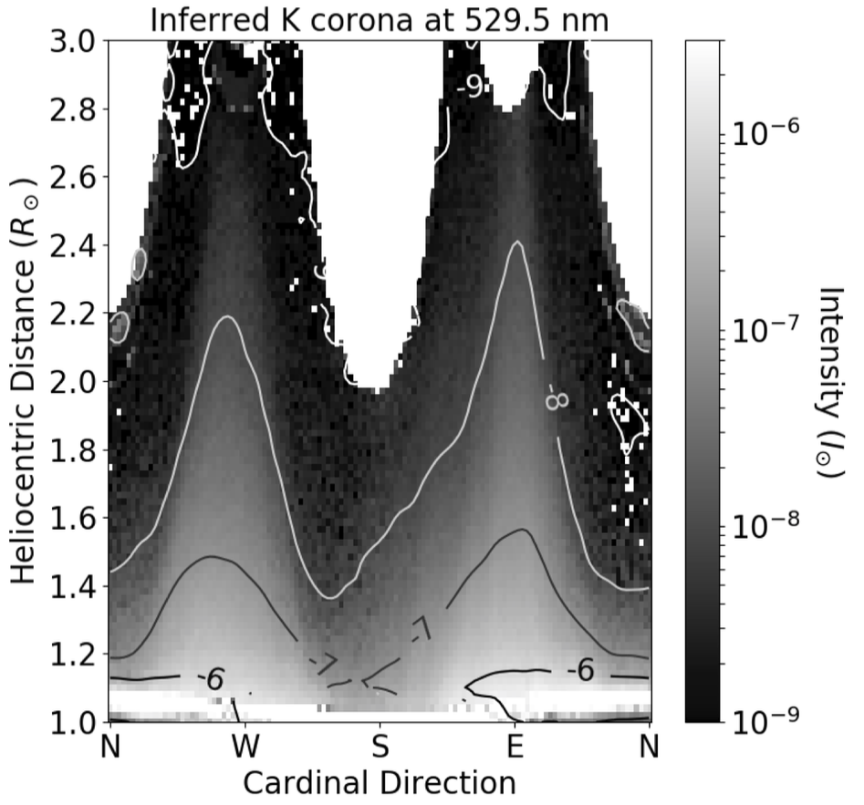
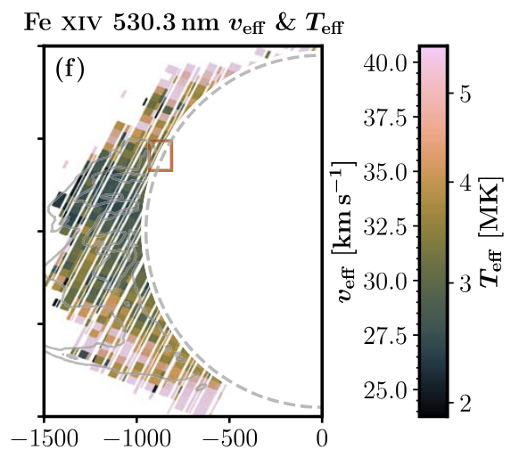

Research Overview
Coronal Electron Temperature
Optical and infrared Emission lines in the corona are a powerful tool for characterizing the electron temperature (Te) of the corona. I have often used narrowband imaging observations of Fe XIV (530.3 nm), Fe X (637.4 nm), and Fe XI (789.2 nm) to infer the electron temperature in the corona.
In Boe et al. (2020a), I used Fe XI and Fe XIV to infer Te during the 2017 eclipse. In Boe et al. (2022) and Boe et al. (2023), I used Fe X, Fe XI, and Fe XIV to measure the Te distribution throughout the corona and test the findings against the Predictive Science Inc. Magnetohydrodynamic Algorithm outside a Sphere (MAS) simulation of the 2019 eclipse.
Further, I contributed to Habbal et al. (2021), which used several years of TSE observations of Fe XI and Fe XIV along with in situ ionic data to demonstrate the remarkable consistency of the average coronal electron temperature regardless of the phase of the solar activity cycle.

(place pub1.jpg in directory)
Magnetic Field Structure
White-light images of the solar corona show the fine-scale structure of the coronal magnetic field at a higher spatial resolution and larger extent than is possible with any other observations at present. In Boe et al. (2020b), I used a Rolling Hough Transform method to quantify the plane-of-sky structure of the coronal magnetic field in white-light eclipse images taken over two solar cycles (from 2000 to 2019). This work was featured in Forbes.
These data are useful for testing models of the coronal magnetic field, such as Potential Field Source Surface (PFSS) models, as we did in Benavitz et al. (2024)

(place pub2.jpg in directory)
Coronal Mass Ejections
Coronal Mass Ejections (CMEs) are magnetic eruptions of material from the low corona, originating from prominences/filaments and active regions, which propagate through the corona and outward into interplanetary space. In eclipse observations, CMEs are often captured at various stages of their evolution.
In Boe et al. (2021b), I used observations made during the 2020 total solar eclipse to study a unique "Double-Bubble" CME, which had an interesting secondary lobe in addition to the primary CME bubble. The secondary bubble was shown to originate from an interaction of the active region CME and a nearby prominence channel to the South.
Line emission observations made at different sites spread across the US during the 2017 TSE also demonstrated that CMEs can change the electron temperature distribution in the corona (Boe et al. 2020a).

(place pub4.jpg in directory)
Coronal Continuum Emission

(place pub3.jpg in directory)
Ionic Dynamics
Observations of line emission are useful for probing coronal physics beyond only the electron temperature. The relative emission of the lines and continuum can be used to infer the ionic Freeze-in distance, where the ions cease changing ionic state as they flow outward into the solar wind. In the low corona, the ionic state is determined by the electron temperature of the plasma, but farther out, the ions do not have collisions as the density drops, so they can no longer gain or lose electrons, thus "freezing" their ionic state. This distance is an important constraint for linking solar wind detections of heavy ions back to the corona, and I used data from the 2015 TSE to infer this distance for Fe XI and Fe XIV for the first time in Boe et al. (2018)
Spectroscopic observations made during TSEs, rather than integrated emission with narrow bandpasses, can be used to infer the Doppler motions of material along the line-of-sight, as well as to infer the line-widths, which are an indication of turbulence and wave motions. I contributed to work using such observations made during the 2017 TSE (Zhu et al. 2024).

(place pub5.jpg in directory)